Riferimento
Oggetti delle finestre
Ogni controllo delle finestre, scheda per scheda: proprietà, eventi, metodi, stili ed esempio.
Per tutti i controlli 1
Scheda Base 5
- FinestraLa finestra del programma: contiene tutti gli altri controlli.
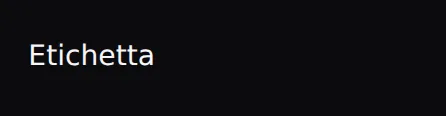
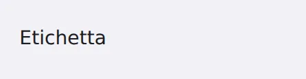
EtichettaTesto fisso da leggere, come un titolo o una spiegazione.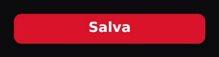
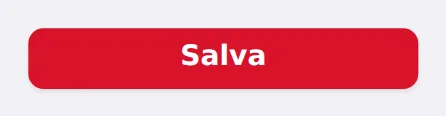
PulsantePulsante da premere per far succedere qualcosa.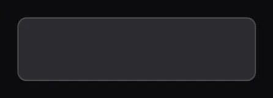
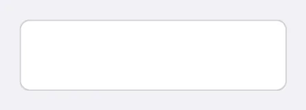
PulsanteImmaginePulsante che mostra un'immagine o un'icona.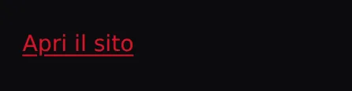
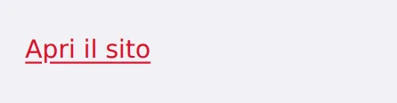
CollegamentoTesto cliccabile che apre un indirizzo web.
Scheda Inserimento 7
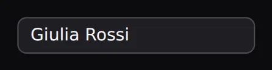
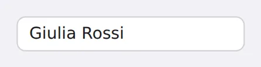
CasellaTestoCasella in cui scrivere una riga di testo.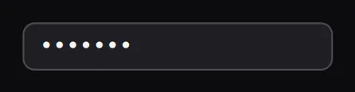
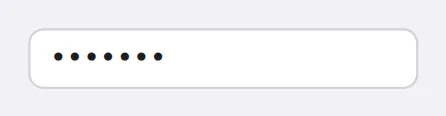
CasellaPasswordCasella per le password: mostra pallini al posto delle lettere.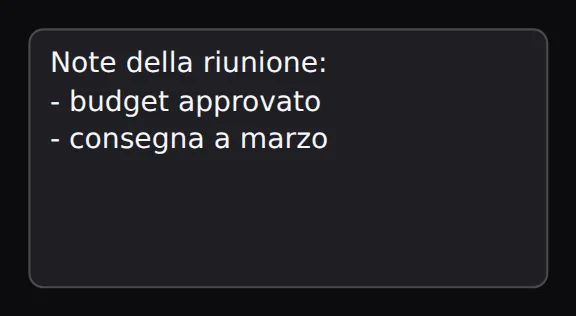
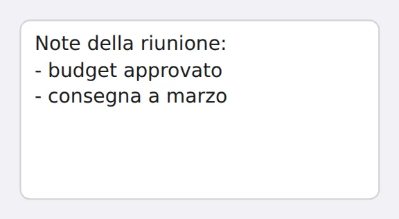
AreaTestoCasella di testo su più righe.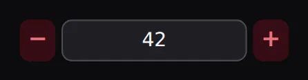
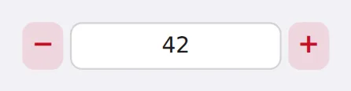
CasellaNumeroCasella per i numeri, con le frecce su e giù.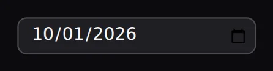
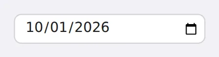
SelettoreDataCasella con calendario per scegliere una data.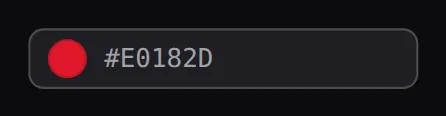
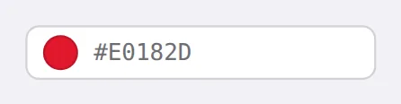
SelettoreColoreRiquadro colorato: cliccandolo si sceglie un colore.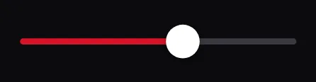
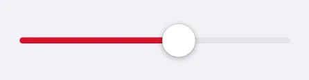
CursoreLevetta da trascinare per scegliere un numero.
Scheda Scelta 5
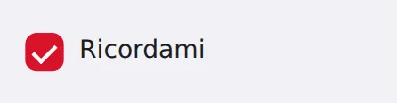
CasellaSpuntaCasella da spuntare per dire sì o no.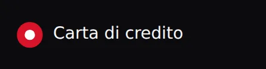
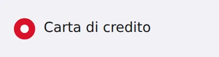
SceltaPallino da scegliere tra alternative (una sola per gruppo).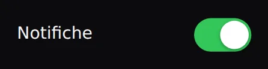
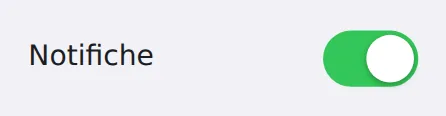
InterruttoreInterruttore acceso/spento, come quelli dei telefoni.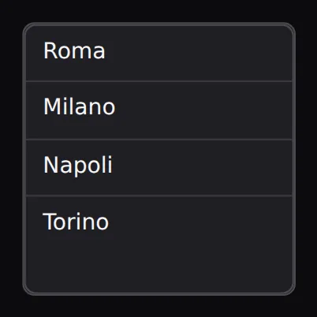
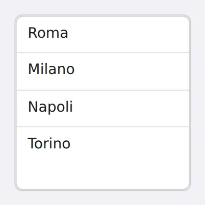
ElencoElenco di elementi tra cui sceglierne uno (o più).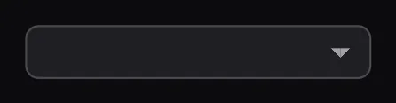
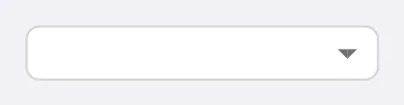
MenuATendinaCasella che si apre mostrando un elenco di scelte.
Scheda Contenitori 4
Scheda Visualizzazione 4
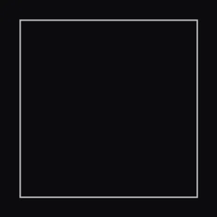
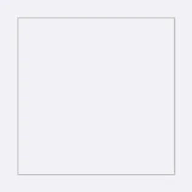
ImmagineMostra un'immagine (PNG, JPG, GIF...).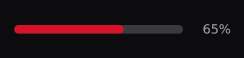
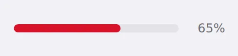
BarraAvanzamentoBarra che si riempie per mostrare a che punto si è.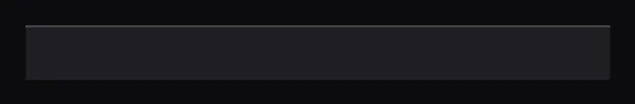
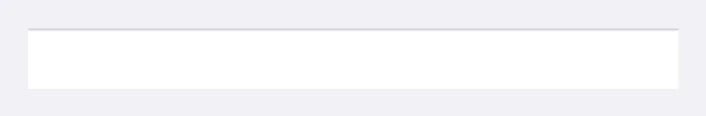
BarraStatoStriscia in fondo alla finestra con messaggi e informazioni.- SuggerimentoFumetti di aiuto che compaiono passando col mouse sui controlli.
Scheda Dati 5
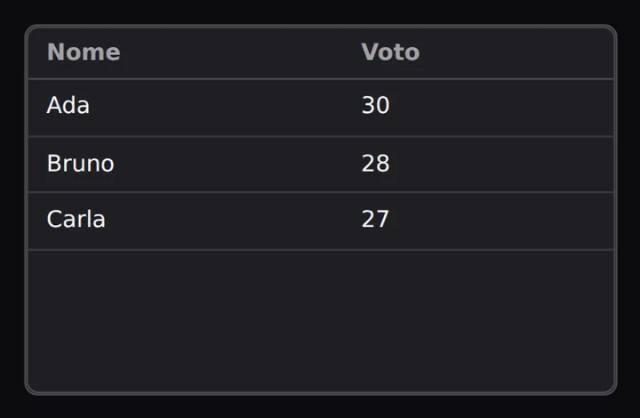
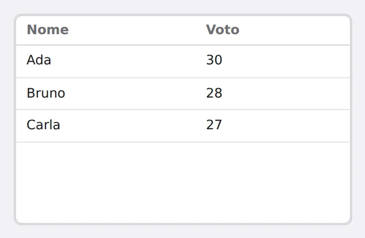
TabellaGriglia di righe e colonne, come un foglio di calcolo.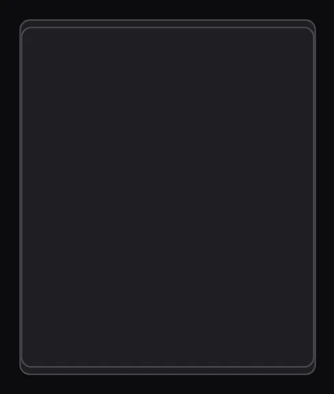
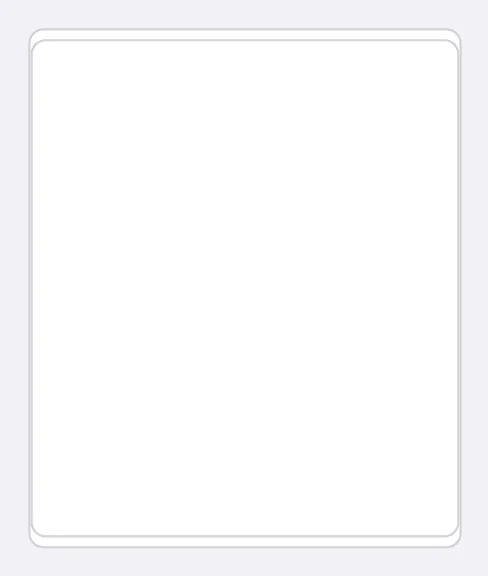
AlberoElementi organizzati a rami, come le cartelle.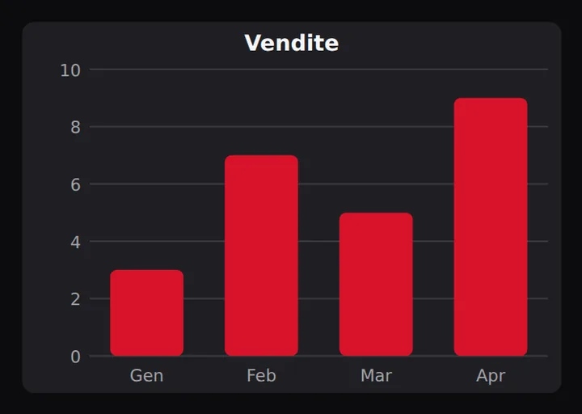
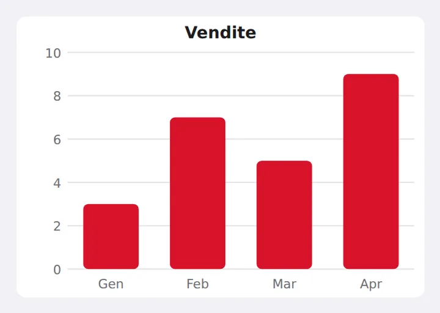
GraficoGrafico a barre, a linee, a torta o a punti.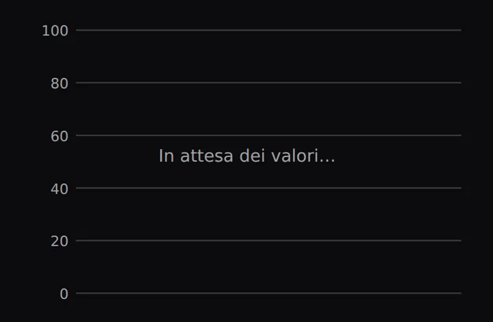
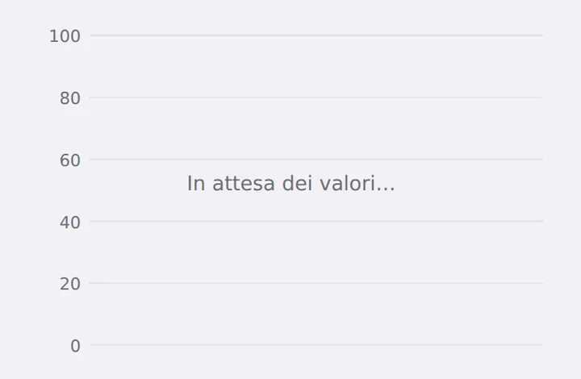
GraficoDalVivoGrafico a linee che scorre mentre arrivano i valori (sensori, misure...)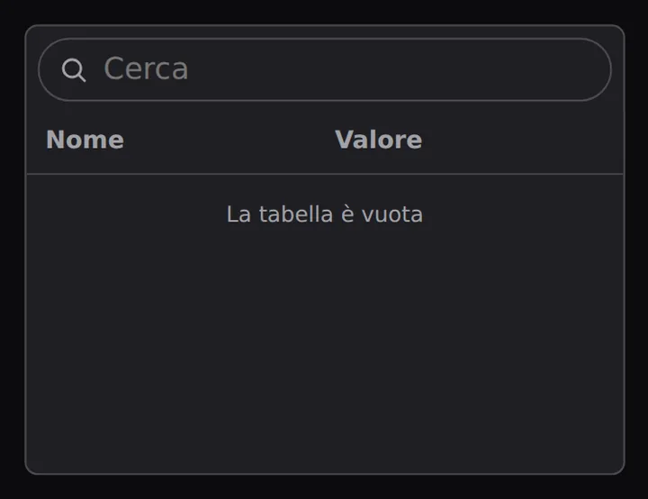
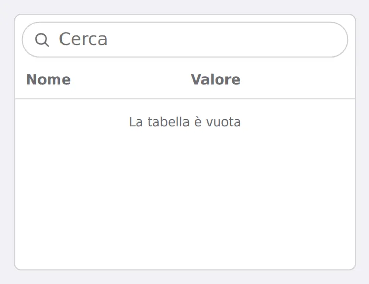
TabellaOrdinabileTabella che si ordina toccando le intestazioni e si filtra scrivendo
Scheda Disegno 3
Scheda Media 8
- SuonoRiproduce musica ed effetti sonori (MP3, WAV...).
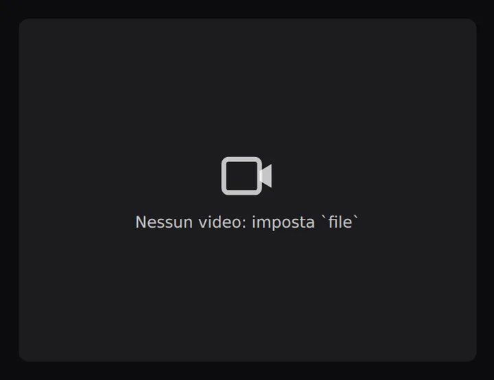
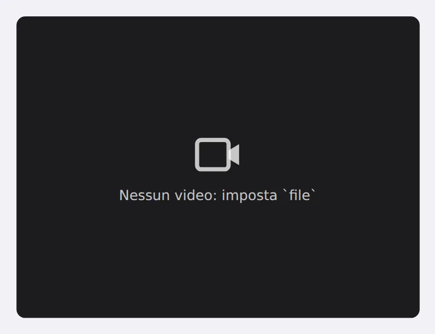
VideoLettore video.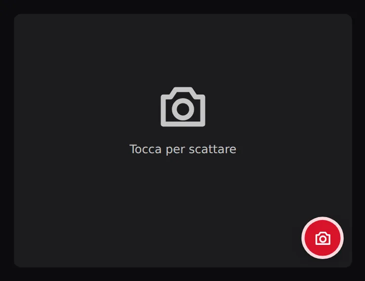
FotocameraAnteprima dalla webcam e scatto (sul telefono: scatta con la fotocamera)- DettaturaTrasforma la voce in testo in italiano
- VoceInvisibile: legge un testo ad alta voce
- LettoreQRLegge codici QR dalla fotocamera
- GeneratoreQRMostra il codice QR di un testo o di un link
- GalleriaScorre immagini con frecce o trascinando
Scheda Menu 4
Scheda Invisibili 3
Scheda Italia 6
- CasellaCodiceFiscaleCasella per il codice fiscale: controlla formato e carattere di controllo, ricava data di nascita e sesso
- CasellaIBANCasella per l'IBAN: verifica le cifre di controllo e mostra la banca
- CasellaTargaCasella che accetta solo targhe italiane valide
- SelettoreComuneCerca tra i comuni italiani e restituisce provincia, regione e CAP
- CasellaImportoCasella per gli euro, scritti all'italiana (1.234,50 €)
- CalendarioFestivitàCalendario con le festività italiane, Pasqua compresa
Scheda Hardware 6
- SchedaPicoCollega una Raspberry Pi Pico via USB o Wi-Fi
- LedLED sullo schermo che ne accende uno vero su un pin
- PulsanteFisicoMostra e segnala un pulsante reale collegato alla scheda
- SensoreLegge un sensore del telefono (accelerometro, luce, bussola...) o della scheda Pico e ne mostra il valore
- OscilloscopioGrafico in tempo reale di un segnale
- PortaSerialeInvisibile: invia e riceve dati su una porta seriale
Scheda Giochi 28
- ScenaArea di gioco aggiornata 60 volte al secondo
- SpritePersonaggio animato con collisioni
- FisicaInvisibile: gravità e rimbalzi per gli sprite
- JoystickLevetta sullo schermo o gamepad vero
- PunteggioContatore animato che ricorda il record
- PersonaggioPersonaggio animato (fermo, cammina, corre, salta, colpito, attacco, vittoria) già pronto a muoversi e saltare
- MondoAPiastrelleLivello a griglia scritto con i simboli: # terreno, = ponte, o moneta, * stella, ^ spuntoni, F arrivo
- PiattaformaPiattaforma su cui camminare (ferma o che si muove)
- MonetaOggetto da raccogliere: dà punti (monete, gemme, stelle, cuori, chiavi...)
- NemicoNemico che pattuglia o insegue: se ti tocca perdi una vita, se gli salti sopra vinci tu
- ProiettileColpo che vola dritto (o il modello dei colpi della dinamica Spara)
- OstacoloOstacolo che fa male: spuntoni, lava, cactus, sega, fuoco
- PortaPorta, bandiera o portale: chi la tocca passa a un'altra schermata o livello
- SfondoCheScorrePaesaggio a più strati che scorre (effetto profondità)
- TelecameraInvisibile: fa scorrere il mondo per seguire un oggetto, e sa scuotere lo schermo
- ViteLe vite del giocatore, come cuori
- ClassificaI punteggi migliori con i nomi, salvati sul dispositivo
- TimerDiGiocoTempo di gioco che scende (o sale); a zero finisce la partita
- PulsanteGiocoGrande pulsante rotondo da gioco: Salta, Spara, Pausa, frecce, azione
- FrecceDirezionaliCroce con le quattro frecce, comoda per il pollice
- DadoDado da lanciare toccandolo (anche più dadi insieme)
- MazzoDiCarteMazzo di carte francesi o napoletane: mescola e pesca
- ScacchieraGriglia di gioco con le regole pronte: tris, forza quattro, dama (o libera)
- ParticelleEsplosioni, stelle, coriandoli, fuochi d'artificio, neve, pioggia, bolle
- PianoforteTastiera da suonare con le dita (do re mi)
- RuotaDellaFortunaRuota a spicchi da far girare: dove si ferma?
- LabirintoLabirinto generato da solo (sempre diverso o sempre uguale con lo stesso seme): i muri fermano il giocatore, l'uscita è la F
- BersaglioBersaglio a cerchi: più vicino al centro, più punti
Scheda Dati e rete 5
Scheda Sicurezza 3
Scheda Produttività 5

 Kanban
KanbanScheda Indicatori 5
Scheda Sviluppo 2
Scheda Didattica 2
Scheda Telefono 16
- BussolaBussola che gira con il telefono: indica dove è il nord
- LivellaLivella a bolla: la bolla si sposta quando inclini il telefono
- VibrazioneInvisibile: fa vibrare il telefono
- TorciaInvisibile: accende e spegne la luce del flash
- PosizioneInvisibile: dove ti trovi, con il GPS del telefono
- BatteriaInvisibile: quanta carica ha il telefono e se è in carica
- CondivisioneInvisibile: manda un testo con WhatsApp, posta, messaggi...
- ContapassiConta i passi mentre cammini, con l'anello dell'obiettivo
- SensoreLuceMisura quanta luce c'è intorno al telefono (in lux)
- SensoreProssimitàSi accorge quando qualcosa si avvicina allo schermo (la mano, l'orecchio)
- BarometroMisura la pressione dell'aria e stima l'altezza sul mare
- MovimentoInvisibile: si accorge quando scuoti il telefono
- FonometroMisura quanto rumore c'è con il microfono (in decibel)
- RegistratoreAudioRegistra la voce con il microfono e la fa riascoltare
- StatoReteInvisibile: dice se il telefono è collegato (Wi-Fi, dati mobili o niente)
- OrientamentoSchermoInvisibile: dice se il telefono è in verticale o in orizzontale
Scheda Tutti i giorni 20
- CalendarioMeseCalendario del mese con gli impegni colorati: tocchi un giorno per sceglierlo
- ChatChat a bolle: i tuoi messaggi a destra, quelli degli altri a sinistra
- ListaSchedeLista di schede con immagine, titolo e sottotitolo, come nelle app
- SelettoreOrarioOre e minuti grandi, con le frecce per cambiarli
- FirmaAManoRiquadro dove firmare con il dito o con il mouse; si salva come immagine
- GradimentoCinque livelli di gradimento con le faccine a linee, come nei sondaggi di soddisfazione
- CasellaPINCaselle per un codice segreto di poche cifre
- CampoRicercaCasella di ricerca con la lente e i suggerimenti mentre scrivi
- TagEtichette tonde da toccare per sceglierle o filtrare (lavoro, urgente, ...)
- FisarmonicaTitoli che si aprono con un tocco e mostrano il loro testo
- BarraSchedeBarra in basso con icone e nomi, come nelle app del telefono
- PulsanteFluttuantePulsante tondo con un'icona, che resta sopra agli altri
- AvvisoMessaggio che compare in basso per qualche secondo e poi sparisce
- ListaCoseDaFareLista delle cose da fare con la spunta e la casella per aggiungerne
- ContatoreNumero con i tasti - e + ai lati, per contare le quantità
- CaroselloImmagini (o schede di testo) che scorrono col dito, con titolo, didascalia e puntini
- OrologioOrologio con le lancette: mostra l'ora vera o quella che scegli
- MeteoScheda del meteo: città, temperatura, icona e previsioni (i dati li dà il programma)
- SchedaProfiloScheda di una persona: foto, nome, descrizione, numeri e un pulsante
- IndicatorePassiPallini numerati collegati: a che passo sei di un modulo in più pagine